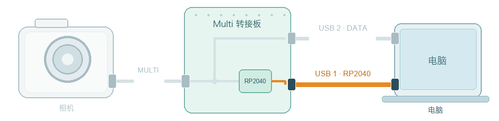
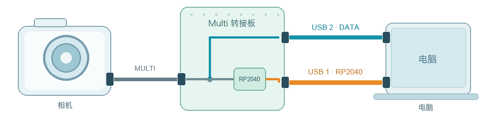

准备 Multi 转接头
使用前准备

只把 RP2040 的 USB 1 接到电脑，先点击“检查转接头”。
请断开 RP2040（USB 1）与电脑的连接，按住 RP2040 上的 BOOT 键，再将 USB 1 接回电脑。接好后松开 BOOT 键，然后点击“检查转接头”。
尚未检查。
准备相机
建议将相机设为连接电脑时自动进入 MSC。
MENU → 设置 → USB → USB连接模式 → 海量存储器（MSC）
连接示意图

先将 Multi 插头接相机、USB 1 和 USB 2 的 USB-C 插头接电脑；再打开相机，立即点击“检查连接”进入临时恢复模式并读取 USB 2。
尚未检查。
在 Zadig 中打开 Device → Load Preset Device，载入 A7M4-Fastboot.cfg。确认设备为 18D1:4EE0、驱动为 WinUSB 后安装。
从 SD 卡恢复原厂系统
机内 SD 更新引导
相机能进入菜单时，请在机内启动官方更新。
A7 IV 引导恢复
无法进入菜单时，A7 IV 可使用 Multi 转接头启动恢复。
使用提示
改过固件的相机，直接从 SD 卡恢复旧版本可能会失败。如果目的是让相机恢复正常，建议优先使用同一台相机的正常全量备份。
如果确实需要回退旧版本，但第一次失败：
- 用全量备份或 SD 卡引导恢复到能正常开机、进入菜单的版本。
- 在相机上选择「设置 → 重置/保存设置 → 出厂重置 → 初始化」。
- 初始化完成后，再用目标版本的固件包重试 SD 卡引导恢复。
此机型的转接头恢复尚不支持。
选择要放入存储卡的 DAT 文件
尚未选择 DAT。
尚未选择存储卡。
写入前会校验所选 DAT 的复制完整性；不会格式化存储卡。
在相机上更新
复制完整不代表所选固件适用于相机恢复。
请先检查 Multi 转接头
尚未开始。
请等待相机更新，预计约 7 分钟。更新期间请保持供电，不要操作相机、拔线或取出存储卡。以相机屏幕显示“更新完成”为准。
备份相机
备份进度按本机实测时间估算，验证完成后显示 100%。
继续已有备份时，请选择原备份任务目录。
尚未选择保存位置。
尚未开始。
已保存的 eMMC 内容发生变化，原备份已保留。重采需要相机已经处于 Fastboot。
恢复已保存状态
选择含 verified.json 的 snapshot 文件夹，也可选择其上一级完整备份任务目录。工具会先核验备份，再检查可恢复范围。
尚未选择备份。
尚未开始。